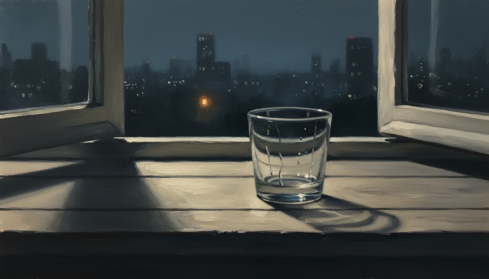

「意志が弱かった」で片付けなかった、決壊の日の記録

約二週間、止められていたものが止まらなくなった
2026年5月14日、夜の電話を入れた。 自分の中の渇きに、誰かに来てもらう形で応えた、ということだ。
5月1日から約二週間、止めていた衝動だった。 日記には淡々と「2勝1敗」と書いてある。動植物園に行った、ネットサーフィンをした、衝動は止めた。その三つを並べただけのメモだ。「止めた」のところに勝ち負けの「勝」をつけているあたり、自分にとってそれが小さくない出来事だったのだとわかる。
それから二週間、私は走った日もあれば、深い対話で泣いた日もあった。 5月8日には四十日ぶりに六キロ走った。5月4日には信頼している店長と深い対話をして、「毎週来る、手をぶつけても前に進む」と伝えた。5月11日には八キロ歩き、別の人との会話の中で、息子の顔が浮かんできて涙が出た。
そういう時間を積み重ねた末に、5月14日が来た。
その日の日記には三行だけ書いてある。
- 体調7／気分6／睡眠6
- 部下のストレス＋睡眠不足＋運動不足の重なり
- 部下のLINEはGPTに返信を考えさせる
「決壊」という言葉を、私はこの日のために取っておいたわけではないと思う。 ただ、ほかの言い方が思いつかなかった。
「意志が弱い」で片付けるのを、やめてみた
以前の私なら、ここで自分を責めた。 「二週間止められていたのに崩した、意志が弱い」と一文で片付けて、そのまま翌日の仕事に向かっていた。責めることで前に進もうとしていた。
でも、その日記の三行を見ているうちに、別の読み方ができることに気づいた。
部下のストレス。 睡眠不足。 運動不足。
三つが同じ日に並んでいる。 これは「意志の弱さ」ではなく、条件の重なりだ。
体力の貯金が減っているところに、頭の中の片隅がずっと部下のことで占められていて、走る時間も取れていなかった。そういう日に、二週間張り続けていた糸が切れた。糸を切ったのは私の意志ではなく、私を支えていた条件のほうが先に削れていた。
意志は、空中に浮いているものではない。 意志を成り立たせていた足場が削れれば、意志も一緒に下りてくる。
そう書くと言い訳がましい。 だから書いておくけれど、これは「だから仕方なかった」という話ではない。「だから次は、足場のほうを観察する」という話だ。
足場のうち、私が動かせるものは三つあった。 睡眠を削らない夜の使い方。 走る時間を最低限確保する週の組み立て方。 部下のLINEを抱え込まずにGPTに下書きさせるという、すでにこの日にやっていた工夫の継続。
責めるのではなく、条件のほうを整える。 これは私にとって、新しい読み方だった。
一年前、感情と衝動の境目がわからなかった数ヶ月
ここから少し、一年前の話をする。
2025年の春から夏にかけて、私は、ある時期そばにいた女性と数ヶ月の関係を持っていた。元カノと別れて半年が経ったころで、最初は二万円の、割り切りと呼ばれる種類の関係だった。
割り切りのつもりだった。
でも、相手は割り切りを始めたばかりの人で、内面のことや、気持ちの揺れを、わりと素直に話す人だった。私はその素直さに触れて、相手の感情の棚卸しを一緒にしたいとか、内面を壊さないでほしいとか、二万円の関係には不釣り合いなことを願いはじめた。
朝食を一緒にとった日もあった。 LINEは毎日続いていた。 私の温度は上がり、相手の温度も上がっているように見えた。
これは割り切りなのか、そうでないのか。 途中から、自分でも見分けがつかなくなっていた。
日記にはこう書いている。
割切り二万円の関係。ただし本質的には自分は割り切りの関係ではなく心のつながりを求める関係であった。
5月9日の夜、自分が相手のことを好きかもしれない、と認めた。 その途端、気持ちが暴走した。 翌5月10日、行き過ぎた表現があって、距離を置かれた。
そのあとは、自然に距離が戻って、何ヶ月か関係は続いた。続いたけれど、私の中では、割り切りという言葉で呼べる関係ではなくなっていた。
あの数ヶ月、私は、自分の中の渇きが、性欲なのか、安心の求めなのか、感情のつながりへの飢えなのか、自分でも分類できないまま、二万円という枠で抱えていた。枠があるから安心、と思っていた。実際には、枠の方が先に溶けていた。
一年前のあの数ヶ月と、5月14日の夜は、同じ系統の話だ。
「割り切りだから大丈夫」と思っているうちに感情がにじみ出ていた数ヶ月と、「二週間止められているから大丈夫」と思っているうちに条件が削れていた数週間。どちらも、自分の中の何かを、ひとつの言葉で扱おうとして、扱いきれなかった。
決壊した夜の自分は、一年前の自分を裏切ったのだろうか。 そう問いかけて、少し考えて、違うなと思った。
観察は、決壊と一緒に育っていく
一年前の数ヶ月、私は自分の渇きを「割り切り」という枠で扱おうとして、扱いきれなかった。あのとき足りなかったのは意志ではなく、「いま自分の中で何が起きているか」を分解して見る目だったのだと、今ならわかる。
5月14日の私は、決壊した翌日に「意志が弱かった」で閉じなかった。 条件の重なりを三つ書き出して、足場のほうを見た。
一年前の自分が次にほしかったのは、たぶん「もう二度と崩れない自分」ではなかった。 崩れた夜のあとに、もう一度自分の中身を分解して並べ直せる自分のほうだった。
5月15日の日記には「仕事終わりに不意にコードを書いた。歩いて出退勤続いている。前に進んだ」と書いてある。 5月16日の日記には「方向転換の中身がまだない、焦りの逃げ場になりがち」「最小行動：夜空を見上げる」と書いてある。
崩れた日のあとも、日記は淡々と続いている。 それが、一年前の覚悟が形を変えて生き残っている、ということなのかもしれない。
残しておきたかったこと
これを書いている今、5月14日のことを誰かに見せたいわけではない。 ただ、決壊した夜を「意志の弱さ」という一語で潰してしまうと、その日の自分に何が起きていたのかが永久に見えなくなる。それが惜しいと思った。
部下のストレス、睡眠不足、運動不足。 三つの条件のうち、どれかひとつでも欠けていたら、その夜の電話はなかったかもしれない。 逆に言えば、次に同じ三つが揃いそうな日に、私は走るか、眠るか、抱え込まないかのどれかを選べる。
その選択肢は、自分を責めているうちは見えない。 責めるのをやめて、条件のほうを見たときに、はじめて出てくる。
決壊の夜を、淡々と書き残しておく。 それくらいでちょうどいいのだと、今は思っている。
#日記 #ジャーナリング #エッセイ #note #毎日note #毎日更新 #続けること #内省 #自己観察 #気づき #書く #ひとりごと #ライフログ #雑記 #思考整理 #感情整理 #自分メモ #ものづくり #創作 #物書き #40代 #40代の生き方 #個人開発 #ひとり起業 #会社員 #サラリーマン #フリーランス #副業 #店長 #マネジメント #組織 #店舗運営 #人を育てる #対話 #コミュニケーション #人間関係 #家族 #子育て #メンター #上司部下 #生き方 #価値観 #誠実 #迷い #選択 #決断 #覚悟 #待つ #観察 #自己理解 #自己一致 #習慣 #瞑想 #ジム #運動 #読書 #執筆 #朝の時間 #夜の時間 #五月 #初夏 #福岡 #九州 #心の動き #日常 #暮らし #淡々 #小さな気づき #AI #AkariLab #衝動 #決壊 #夜の電話 #自制 #コントロール #寝不足 #運動不足 #ストレス #部下対応 #LINE対応 #GPT活用 #復縁 #過去の関係 #感情と衝動 #境界線 #割り切り #対人距離 #再構築 #条件の重なり #意志ではなく #責めない #整える #観察日記 #自分を許す #弱さの話ではない #構造の話 #セルフケア #メンタルヘルス #成人男性 #向き合う夜